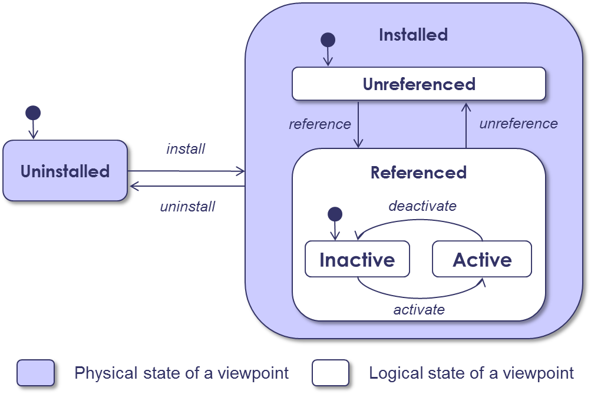

Each viewpoint installed in a project respects a lifecycle according to the following state machine.

Viewpoint lifecycle - States
| State | Description |
| Uninstalled | The viewpoint is not physically installed on the platform. |
| Installed | The viewpoint is correctly installed on the platform and visible from the Viewpoint Manager View. |
| Unreferenced | The viewpoint is not referenced in the model. No data (e.g. model elements, diagram elements) from the viewpoint is present in the model. No service from the viewpoint is active on the model. |
| Referenced | The viewpoint is referenced in the model. Data corresponding to the viewpoint can be present in the model. |
| Inactive | The viewpoint is inactive on the model. Data corresponding to the viewpoint can be present in the model, but will not be displayed to the end user. Services from the viewpoint are not active. |
| Active | The viewpoint is active on the model. Data is present and displayed to the end user. Services from the viewpoint is active. |
Viewpoint lifecycle - Transitions
| Action | Description |
| install | Installation of the viewpoint in the platform. |
| uninstall | Uninstallation of the viewpoint from the platform. If a viewpoint is referenced by a model, then the model will be unusable as is (A detachment is needed). |
| reference | The project uses the referenced viewpoint. The viewpoint metadata are updated. The viewpoint tools are available. |
| unreference | This action launches a detachment to cleanly remove the viewpoint(s) in the project. The viewpoint metadata are updated. |
| activate | The viewpoint is activated and all data are displayed (e.g., model element in the model browser, in the diagrams). |
| deactivate | The viewpoint data are still in use but are hidden. |
Each transition is implemented by an action represented as follows.
| Action | Icon |
| reference | |
| unreference | |
| activate | |
| deactivate | |
| Uninstalled | Installed | |||
| Unreferenced | Referenced | |||
| Inactive | Active | |||
| Viewpoint in the platform | No | Yes | Yes | Yes |
| Data in the model | No | No | Yes | Yes |
| Data manipulation/visualization | No | No | No | Yes |
| Sirius Layers active | No | No | No | Yes |
| Sirius Representation visible | No | No | No | Yes |
| Viewpont services | No | No | No | Yes |